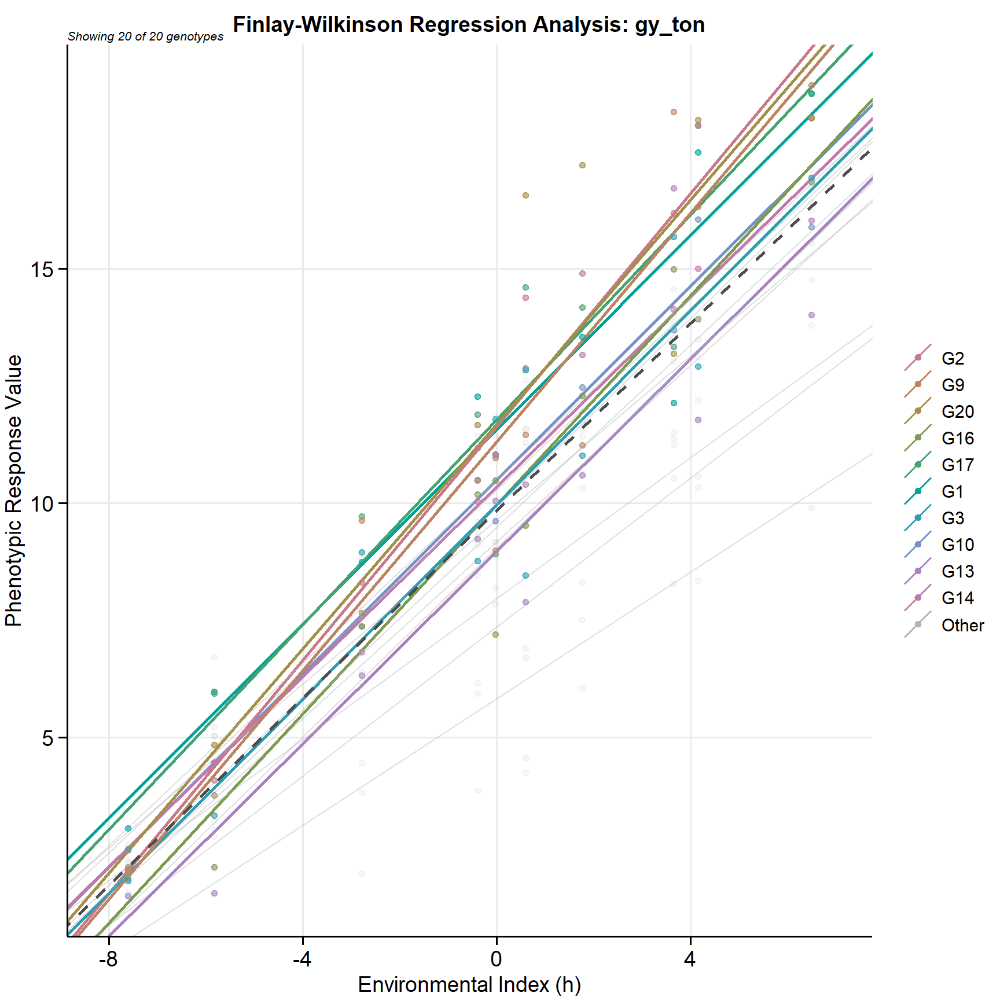
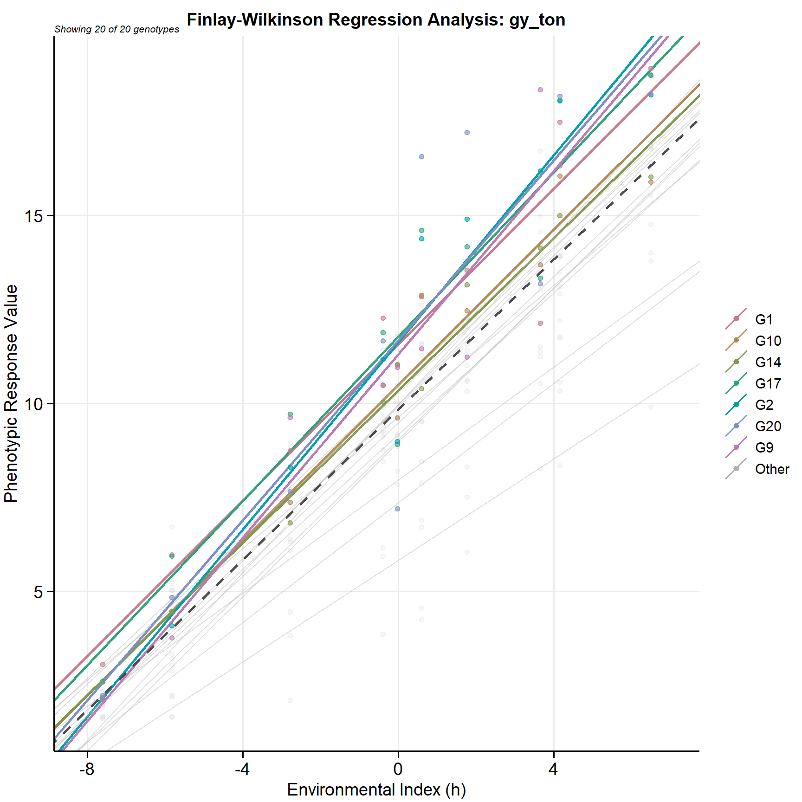
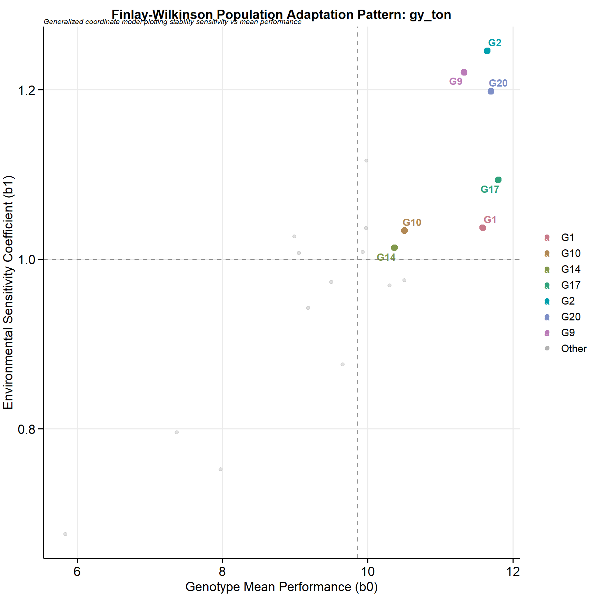
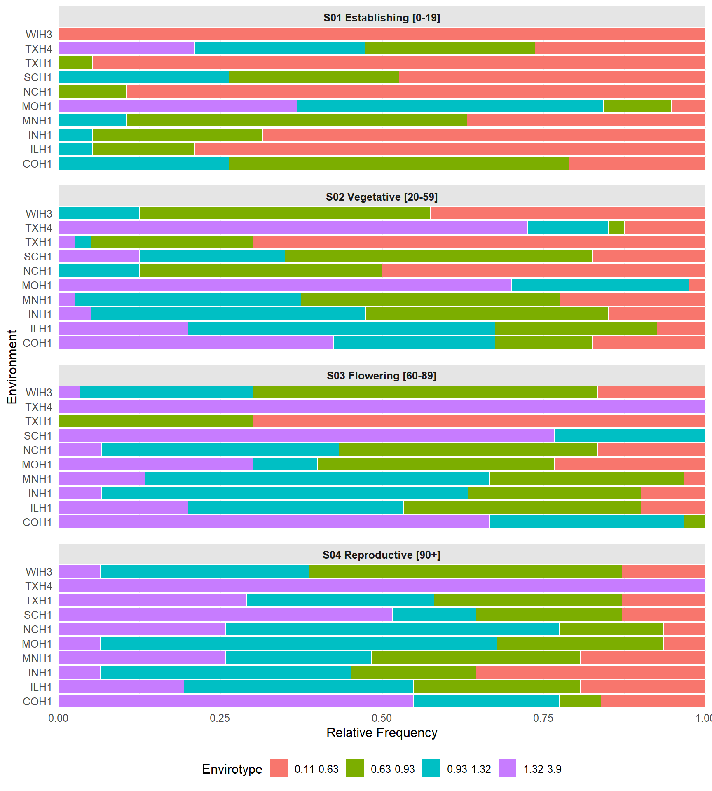
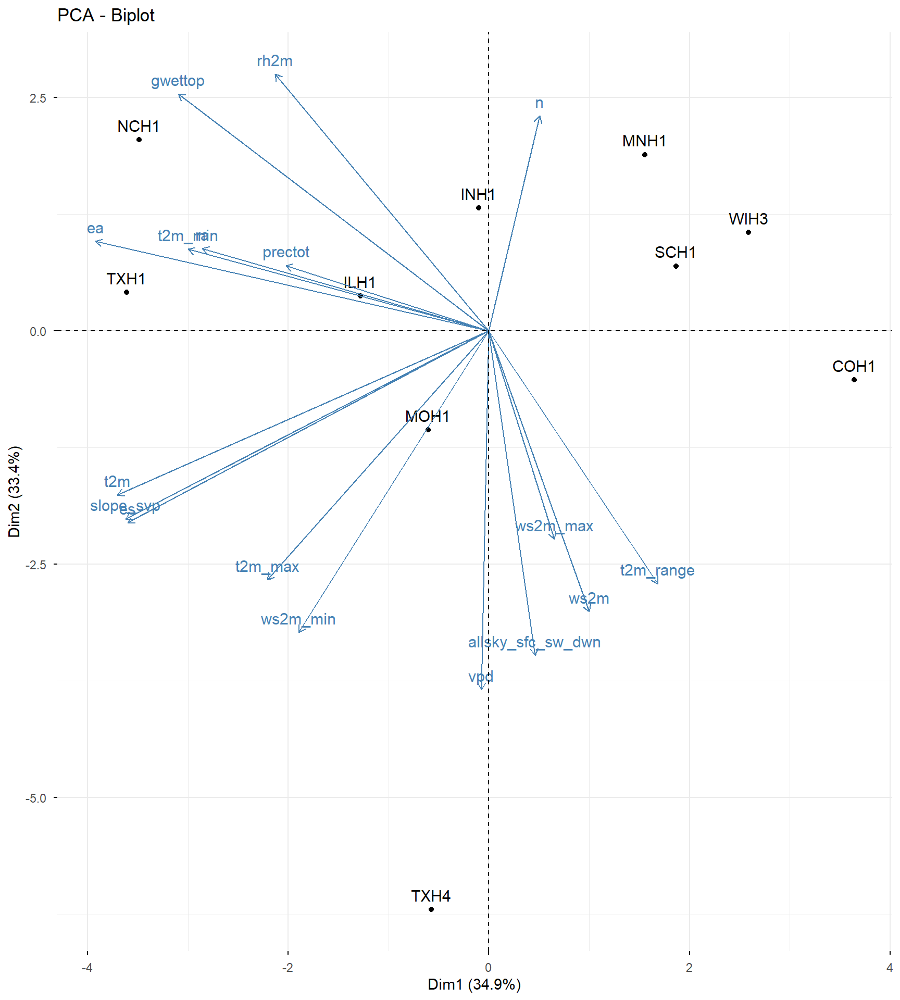
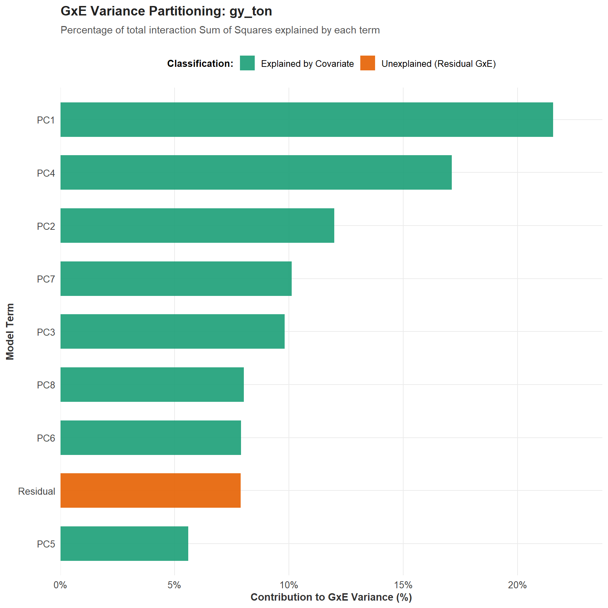
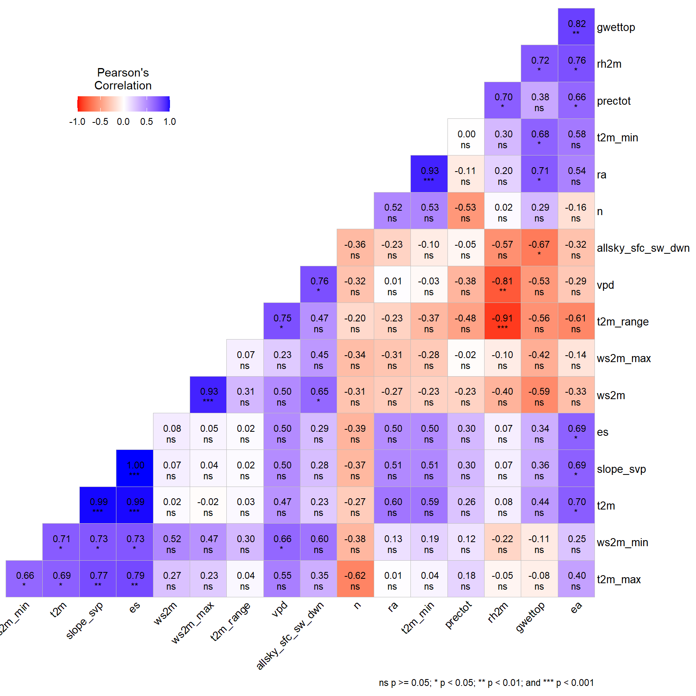
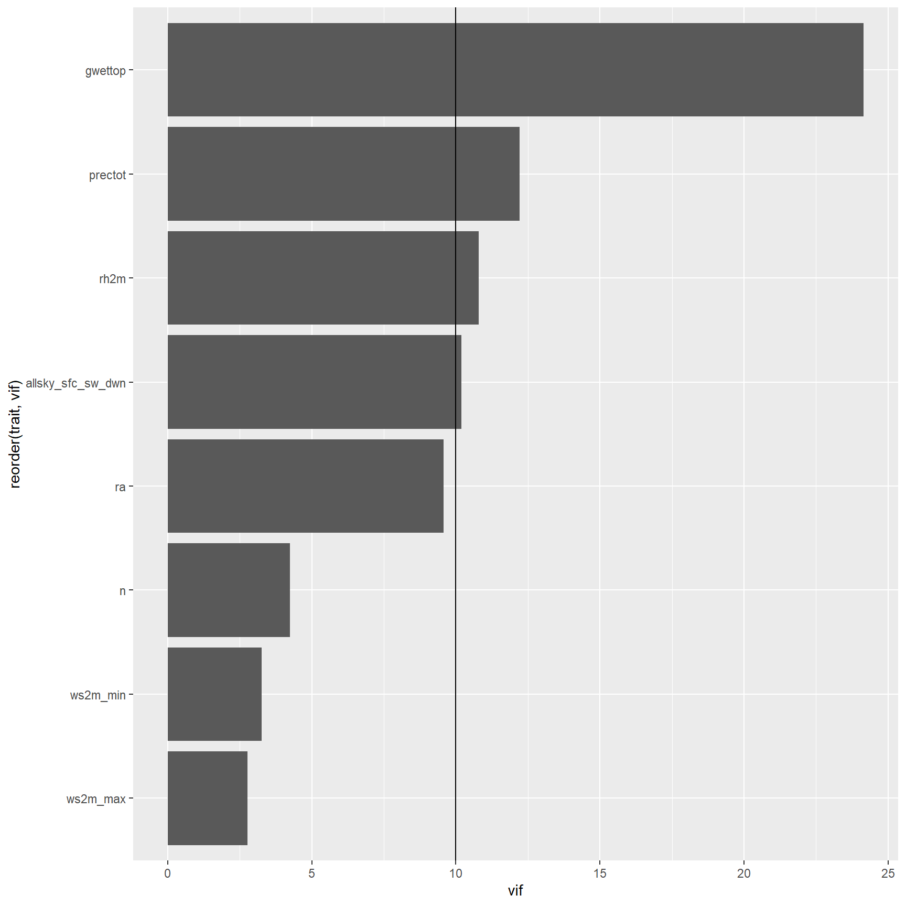
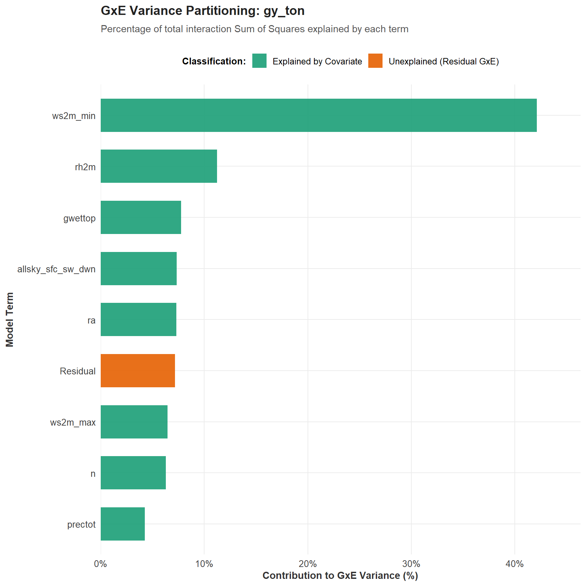

Code
library(metan)
library(tidyverse)
library(rio)
library(factoextra)
library(gt)
# Importing data
df <-
import("data/ge_data.csv") |>
metan::as_factor(env, gen, replicate) |>
mutate(gy_ton = grain_yield * 0.0691895)The Finlay and Wilkinson regression model is a classic and widely used approach in plant breeding and agronomy to analyze Genotype-by-Environment (GxE) interactions and evaluate phenotypic stability. It establishes an Environmental Index (EI), which is the mean performance of all tested genotypes in a specific environment relative to the overall grand mean.A linear regression is then fitted for each individual genotype against this Environmental Index.
This analysis yields two critical parameters for each genotype: * An intercept (\(\mu_i\)) representing the genotype’s average performance across all environments; * A regression coefficient (\(\beta_i\)) serving as a metric for phenotypic stability and responsiveness.
A slope of \(\beta_i = 1.0\) indicates average stability; the genotype’s response mirrors the average population response across environments. A slope of \(\beta_i > 1.0\) indicates low stability and high sensitivity, meaning the genotype is highly responsive and specifically adapted to high-yield, favorable environments. A slope of \(\beta_i < 1.0\) indicates high stability and low sensitivity, meaning the genotype is robust, predictable, and better adapted to poor or highly variable environments.
The phenotypic performance of genotype \(i\) in environment \(j\) is modeled as follows:
\[ Y_{ij} = \mu + g_i + \beta_i I_j + e_{ij} \]
Where: * \(Y_{ij}\) is the observed mean phenotypic value of genotype \(i\) in environment \(j\) ; * \(\mu\) is the grand mean of all observations across all genotypes and environments. * \(g_i\) is the main effect of genotype \(i\) (expressed as a deviation from the grand mean, where \(\sum g_i = 0\)); * \(\beta_i\) is the regression coefficient (slope) for genotype \(i\), describing its sensitivity to environmental changes. * \(I_j\) is the Environmental Index for environment \(j\); * \(e_{ij}\) is the residual error associated with genotype \(i\) in environment \(j\).
Calculation of the Environmental Index (\(I_j\))The Environmental Index is calculated directly from the data as:\[I_j = \bar{Y}_{\cdot j} - \bar{Y}_{\cdot \cdot}\]Where:\(\bar{Y}_{\cdot j}\) is the mean of all genotypes in environment \(j\).\(\bar{Y}_{\cdot \cdot}\) is the grand mean (\(\mu\)).Note on constraints: By definition, the sum of all environmental indices equals zero (\(\sum I_j = 0\)), and the average of all regression coefficients across the population equals one (\(\bar{\beta} = 1.0\)).
ℹ No trait specified. Defaulting to first available trait: "gy_ton"✔ Isolated top 10 most responsive genotype(s) by slope (b1): "G2", "G9", "G20", "G16", "G17", "G1", "G3", "G10", "G13", and "G14"✔ Rendering Finlay-Wilkinson graphics framework for 20 variety vectors.
ℹ No trait specified. Defaulting to first available trait: "gy_ton"ℹ Evaluating highlight expression rule: `b0 > 10 && b1 > 1`✔ Highlight expression successfully isolated 7 genotype(s): "G1", "G10", "G14",…✔ Rendering Finlay-Wilkinson graphics framework for 20 variety vectors.
ℹ No trait specified. Defaulting to first available trait: "gy_ton"ℹ Evaluating highlight expression rule: `b0 > 10 && b1 > 1`✔ Highlight expression successfully isolated 7 genotype(s): "G1", "G10", "G14",…✔ Rendering Finlay-Wilkinson graphics framework for 20 variety vectors.
Factorial Regression is an advanced, covariate-based parametric approach used in plant breeding and agronomy to open the “black box” of Genotype-by-Environment (GxE) interactions. While classic stability models like Finlay and Wilkinson characterize environmental quality using internal biological indicators (the Environmental Index), Factorial Regression introduces explicit, external environmental covariates (e.g., maximum temperature, total rainfall, solar radiation) directly into the linear model.
The primary objective of this method is to identify which specific physical or climatic factors drive the GxE interaction. This is achieved through a multi-step analytical framework:
By fitting interaction terms between individual genotypes and the environmental covariates (\(\text{GEN} \times \text{Covariate}\)), the model partitions the total GxE sum of squares (\(SS_{G\times E}\)). This quantifies exactly what percentage of the GxE variation can be explained by each explicit climate factor, and what remains unexplained as residual structural noise (“Residual GxE”).
A major constraint of Factorial Regression is degrees of freedom exhaustion. To fit multiple covariates simultaneously without causing model singularity, the maximum number of allowable variables cannot exceed the number of environments minus two (\(E - 2\)).
To incorpore a larger number of environmental covariates, we can use a Principal Component Analysis (PCA) approach to compresses the multi-dimensional environmental space into a set of orthogonal (completely independent) Principal Component scores (\(PC_1, PC_2, \dots, PC_m\)). These synthetic variables capture the maximum amount of environmental variance while guaranteeing a non-singular, robust linear model fit.
Beyond global partitioning, factorial regression evaluates independent linear slopes for each individual genotype against each active covariate (or extracted PC). This yields genotype-specific responsiveness coefficients, allowing breeders to identify which specific cultivars are highly sensitive or robustly tolerant to targeted environmental stresses like high temperature or drought.
In multi-environment trials, environmental covariates serve as explicit indicators used to quantify, characterize, and interpret the physical and microclimatic drivers behind Genotype-by-Environment (GxE) interactions. Instead of treating an environment as a simple qualitative label or a “black box,” the integration of these continuous predictors shifts the focus toward identifying the mechanistic causes of specific adaptation.
These covariates typically comprise a highly informative mixture of edaphic (soil-related) and climatic parameters recorded across the testing sites during the active growing season. To capture critical crop requirements, continuous macroclimatic elements like temperature and rainfall are frequently partitioned into distinct physiological phases of the crop lifecycle (e.g., vegetative growth, anthesis, and grain filling).
By linking these continuous physical vectors directly with phenotypic performance, models like Factorial Regression can determine what percentage of the structural GxE variance is explained by measurable environmental stresses or resource availability.
Environmental parameters are systematically grouped into categories reflecting their unique biophysical influences on crop physiology:
| Category | Covariates | Agronomic Relevance |
|---|---|---|
| Thermal Drivers | Maximum, Minimum, and Mean Temperature; Growing Degree Days (GDD); Thermal Amplitude | Tracks heat stress boundaries, chilling injury risks, and phenological development rates. |
| Hydrological Profile | Cumulative Rainfall, Evapotranspiration, Soil Volumetric Water Content, Vapor Pressure Deficit (VPD) | Determines drought intensity, water-use efficiency thresholds, and atmospheric moisture stress. |
| Radiation Dynamics | Solar Radiation, Photoperiod, Photosynthetically Active Radiation (PAR) | Quantifies the radiant energy available for net photosynthesis and dry matter accumulation. |
| Edaphic Properties | Soil Texture (Clay/Sand fractions), pH, Organic Matter, Cation Exchange Capacity (CEC), Nutrient Profiles (N, P, K) | Reflects baseline physical constraints, root expansion limits, and soil nutrient supply capacity. |
In this example, thermal, hydrological, and radiation covariates will be gathered for each one of the 10 fields using the get_wheater() function, which fetches and process NASA POWER-powered meteorological information.
The table below describes the physical meaning, standard units of measurement, and mathematical or database sources for each environmental covariate generated by the get_climate().
| Covariate | Full Name / Description | Standard Unit | Source / Computational Method |
|---|---|---|---|
ENV |
Environment Identifier | String (ID) | User-supplied string or auto-generated index key. |
LAT |
Latitude coordinate | Decimal Degrees | User-supplied geographic location. |
LON |
Longitude coordinate | Decimal Degrees | User-supplied geographic location. |
DATE |
Calendar Date | YYYY-MM-DD | Derived natively from NASA POWER temporal keys. |
YEAR |
Evaluation Year | Year | Extracted split string from DATE. |
MO |
Evaluation Month | Month (01-12) | Extracted split string from DATE. |
DY |
Day of the Month | Day (01-31) | Extracted split string from DATE. |
DOY |
Day of the Year | Julian Day (1-366) | Calendar day sequence mapped natively by NASA. |
DFS |
Days From Start | Cumulative Count | Calculated internally using dplyr::row_number() grouped by ENV. |
RA |
Extraterrestrial Solar Radiation | \(MJ \cdot m^{-2} \cdot day^{-1}\) | Based on solar declination (\(\phi\)) and LAT. |
N |
Maximum Day Length | Hours | Accounting for the solar hour angle (\(w_s\)). |
T2M |
Mean Temperature at 2 Meters | \(^\circ\text{C}\) | Retrieved directly from NASA POWER database. |
T2M_MIN |
Minimum Temperature at 2 Meters | \(^\circ\text{C}\) | Retrieved directly from NASA POWER database. |
T2M_MAX |
Maximum Temperature at 2 Meters | \(^\circ\text{C}\) | Retrieved directly from NASA POWER database. |
PRECTOT |
Cumulative Precipitation | \(\text{mm} \cdot \text{day}^{-1}\) | Retrieved directly from NASA POWER database. |
RH2M |
Relative Humidity at 2 Meters | \(\%\) | Retrieved directly from NASA POWER database. |
WS2M |
Wind Speed at 2 Meters | \(\text{m} \cdot \text{s}^{-1}\) | Retrieved directly from NASA POWER database. |
GWETTOP |
Topsoil Moisture | Proportion | Surface soil wetness fraction retrieved from NASA. |
ALLSKY_SFC_SW_DWN |
Sky Insolation Incident on a Horizontal Surface | \(MJ \cdot m^{-2}\cdot day^{-1}\) | Retrieved directly from NASA POWER database. |
WD2M |
Wind Direction at 2 Meters | Degrees (\(^\circ\)) | Wind meteorological vector angles retrieved from NASA. |
ES |
Saturation Vapor Pressure | \(\text{kPa}\) | Computed using Tetens’ equation (\(0.61078 \cdot \exp(\frac{17.27 \cdot T}{T + 237.3})\)). |
EA |
Actual Vapor Pressure | \(\text{kPa}\) | Computed as \(E_s \cdot \left(\frac{RH}{100}\right)\). |
VPD |
Vapor Pressure Deficit | \(\text{kPa}\) | Computed as the structural difference: \(E_s - E_a\). |
SLOPE_SVP |
Slope of Saturation Vapor Pressure Curve | \(\text{kPa} \cdot ^\circ\text{C}^{-1}\) | Computed as \(\frac{4098 \cdot E_s}{(T + 237.3)^2}\) for Penman-Monteith applications. |
| env | city | state | lat | lon | planted | harvested |
|---|---|---|---|---|---|---|
| NCH1 | Clayton | NC | 35.6507 | -78.4564 | 2023-04-17 | 2023-09-21 |
| TXH1 | College Station | TX | 30.6280 | -96.3344 | 2023-03-01 | 2023-07-26 |
| MOH1 | Columbia | MO | 38.9517 | -92.3341 | 2023-05-24 | 2023-11-08 |
| COH1 | Fort Collins | CO | 40.5853 | -105.0844 | 2023-05-24 | 2023-11-07 |
| WIH3 | Hancock | WI | 44.1328 | -89.5240 | 2023-04-26 | 2023-11-14 |
| TXH4 | Lubbock | TX | 33.5779 | -101.8552 | 2023-05-12 | 2023-11-20 |
| SCH1 | Pendleton | OR | 45.6721 | -118.7886 | 2023-05-06 | 2023-09-20 |
| MNH1 | Saint Paul | MN | 44.9537 | -93.0900 | 2023-05-17 | 2023-11-14 |
| ILH1 | Urbana | IL | 40.1106 | -88.2072 | 2023-05-03 | 2023-10-02 |
| INH1 | West Lafayette | IN | 40.4259 | -86.9081 | 2023-05-04 | 2023-10-17 |
Fetching NASA POWER data ■■■■■■■ 20% | Fetching TXH1 …Fetching NASA POWER data ■■■■■■■■■■■■■ 40% | Fetching COH1 …Fetching NASA POWER data ■■■■■■■■■■■■■■■■■■■ 60% | Fetching TXH4 …Fetching NASA POWER data ■■■■■■■■■■■■■■■■■■■■■■■■■ 80% | Fetching MNH1 …Fetching NASA POWER data ■■■■■■■■■■■■■■■■■■■■■■■■■■■■ 90% | Fetching ILH1 …Fetching NASA POWER data ■■■■■■■■■■■■■■■■■■■■■■■■■■■■■■■ 100% | Fetching INH1 …dffiltered <-
climate |>
group_by(ENV) |>
slice(1:120) # 120 after sowing
envirodata <-
envirotype(
data = dffiltered,
dates = c(0, 20, 60, 90),
stages = c("S01 Establishing", "S02 Vegetative", "S03 Flowering", "S04 Reproductive"),
vars = "VPD"
)
# A closer view of VPD in different crop stages across environments
plot(envirodata)
# Create a environment-scale dataset with summary statistics
df_means <-
climate |>
rename_with(tolower, everything()) |>
group_by(env) |>
summarise(
across(c(ra, n, t2m, t2m_range, rh2m, ws2m, gwettop, vpd, slope_svp, es, ea), mean),
across(c(allsky_sfc_sw_dwn, prectot), sum),
across(c(t2m_min, ws2m_min), min),
across(c(t2m_max, ws2m_max), max)
)
# PCA model
pcam <- prcomp(df_means |> column_to_rownames("env"), scale = TRUE)
# A general view of climate variables in the environments
fviz_pca_biplot(pcam)
The phenotypic performance of genotype \(i\) in environment \(j\) (optionally within block \(k\)) is modeled as follows:
\[ Y_{ijk} = \mu + g_i + e_j + b_{k(j)} + \sum_{m=1}^{M} (\gamma_{im} Z_{jm}) + d_{ij} + \varepsilon_{ijk} \]
Where:
\(Y_{ijk}\) is the observed phenotypic value of genotype \(i\) in environment \(j\), within block \(k\) (the block term \(b_{k(j)}\) is omitted if no replication column is present).
\(\mu\) is the grand mean of the multi-environment trial.
\(g_i\) is the main additive effect of genotype \(i\).
\(e_j\) is the main additive effect of environment \(j\).
\(Z_{jm}\) is the value of the \(m\)-th environmental covariate (or the \(m\)-th Principal Component score) recorded in environment \(j\).
\(\gamma_{im}\) is the genotypic slope (sensitivity coefficient) of genotype \(i\) response to the specific covariate \(m\). This parameter captures the explained, predictable portion of the GxE interaction.
\(d_{ij}\) is the residual GxE interaction deviation for genotype \(i\) in environment \(j\) that cannot be accounted for by any of the measured external covariates.
\(\varepsilon_{ijk}\) is the random experimental error associated with the plot.
The function factorial_reg() can be used to fit the model, using two data.frames. The first (df_ge) contains the genotype x environment data, and the second (df_cov) containing the environmental covariates. When the number of environmental covariates exceeded the maximum allowable degrees of freedom (\(E - 2\)), a Principal Component Analysis (PCA) is implemented on the centered and scaled covariate matrix to extract orthogonal environmental scores (\(PC_1, PC_2, \dots, PC_m\)). The total GxE interaction Sum of Squares (\(SS_{G\times E}\)) is subsequently partitioned into variations explained by specific genotype-by-covariate interactions via a Type-I sequential ANOVA layout. Finally, genotype-specific sensitivity slopes (\(\gamma_{im}\)) along with their corresponding 95% confidence intervals are estimated using independent per-genotype linear regressions to characterize specific environmental responsiveness profiles.
ℹ Notice: 17 covariates provided, but only 8 can be fitted with 10 environments to prevent singularity.ℹ Automatically running PCA and extracting maximum allowable Principal Components...✔ PCA completed successfully.| term | df | sum_sq | mean_sq | f_value | p_value |
|---|---|---|---|---|---|
| GEN:PC1 | 19 | 246.28234 | 12.962228 | 2.923011 | 4.823421e-05 |
| GEN:PC2 | 19 | 136.89069 | 7.204773 | 1.624692 | 4.783738e-02 |
| GEN:PC3 | 19 | 112.04181 | 5.896937 | 1.329772 | 1.606681e-01 |
| GEN:PC4 | 19 | 195.65503 | 10.297633 | 2.322139 | 1.457756e-03 |
| GEN:PC5 | 19 | 63.91926 | 3.364172 | 0.758628 | 7.560893e-01 |
| GEN:PC6 | 19 | 90.27415 | 4.751271 | 1.071422 | 3.786254e-01 |
| GEN:PC7 | 19 | 115.68221 | 6.088537 | 1.372978 | 1.364025e-01 |
| GEN:PC8 | 19 | 91.71830 | 4.827279 | 1.088562 | 3.602705e-01 |
| Residual | 19 | 90.13392 | 4.743891 | 1.069758 | 3.804341e-01 |
Analysis of Variance Table
Response: gy_ton
Df Sum Sq Mean Sq F value Pr(>F)
env 9 6744.3 749.36 108.1621 < 2.2e-16 ***
gen 19 1352.1 71.16 10.2713 < 2.2e-16 ***
env:block 1 105.1 105.15 15.1767 0.0001154 ***
env:gen 171 1141.5 6.68 0.9635 0.6057986
Residuals 385 2667.3 6.93
---
Signif. codes: 0 '***' 0.001 '**' 0.01 '*' 0.05 '.' 0.1 ' ' 1[1] 1142.598| trait | term | type | df | sum_sq | percent_gxe | percent_gxe_accum |
|---|---|---|---|---|---|---|
| gy_ton | GEN:PC1 | Explained by Covariate | 19 | 246.28234 | 21.554598 | 21.55460 |
| gy_ton | GEN:PC4 | Explained by Covariate | 19 | 195.65503 | 17.123703 | 38.67830 |
| gy_ton | GEN:PC2 | Explained by Covariate | 19 | 136.89069 | 11.980655 | 50.65896 |
| gy_ton | GEN:PC7 | Explained by Covariate | 19 | 115.68221 | 10.124492 | 60.78345 |
| gy_ton | GEN:PC3 | Explained by Covariate | 19 | 112.04181 | 9.805884 | 70.58933 |
| gy_ton | GEN:PC8 | Explained by Covariate | 19 | 91.71830 | 8.027173 | 78.61650 |
| gy_ton | GEN:PC6 | Explained by Covariate | 19 | 90.27415 | 7.900781 | 86.51729 |
| gy_ton | GEN:PC5 | Explained by Covariate | 19 | 63.91926 | 5.594205 | 92.11149 |
| gy_ton | Residual | Unexplained (Residual GxE) | 19 | 90.13392 | 7.888509 | 100.00000 |

When the number of raw environmental covariates exceeds the mathematical degrees of freedom threshold (\(M = E - 2\), where \(E\) represents the number of unique environments), standard factorial regression relies on Principal Component Analysis (PCA) to compress the environmental matrix. While PCA prevents model singularity, it creates synthetic variables that mask the specific physical drivers of the Genotype-by-Environment (GxE) interaction.
To preserve the direct biological and agronomic interpretability of the environmental indicators while mitigating severe model overparameterization, a customized collinearity-constrained forward-stepwise selection procedure was implemented in factorial_reg() (select_covar = TRUE).
The algorithm operates via an iterative optimization loop structured as follows:
By deploying this forward-stepwise approach instead of rigid synthetic dimension reductions like PCA, the model isolates a clean, non-redundant subset of raw physical parameters that maximize predictive power while maintaining biological transparency.

# run factorial regression with the traits that most explain GxE interaction and are not correlated
# rh2m, ws2m_min, es, t2m_min, ra
facreg2 <-
factorial_reg(
.data = df,
env = env,
gen = gen,
rep = replicate,
resp = gy_ton,
cov_data = df_means,
cov_vars = everything(),
select_covar = TRUE,
collinear_threshold = 0.8,
scale_covars = FALSE
)ℹ Stepwise procedure: Forward selection of up to 8 covariates to maximize GxE explanation...⠙ Selecting covariates | ■■■■■■■■■■■■ 3/8 [ 38%] | ETA: 2s⠹ Selecting covariates | ■■■■■■■■■■■■■■■■■■■■■■■■■■■ 7/8 [ 88%] | ETA: 0s⠹ Selecting covariates | ■■■■■■■■■■■■■■■■■■■■■■■■■■■■■■■ 8/8 [100%] | ETA: 0s✔ Stepwise selection complete. Selected 8 optimal covariates: "ws2m_min", "rh2m", "ra", "allsky_sfc_sw_dwn", "ws2m_max", "gwettop", "n", and "prectot" step added_covariate total_explained_ss
1 1 ws2m_min 481.1473
2 2 rh2m 609.5713
3 3 ra 692.9950
4 4 allsky_sfc_sw_dwn 776.9857
5 5 ws2m_max 850.8863
6 6 gwettop 939.6553
7 7 n 1011.7120
8 8 prectot 1060.4393! The multicollinearity in the matrix should be investigated. cn = 141.706 | Largest VIF = 24.1435820025711Matrix determinant: 0.0004331
Largest correlation: rh2m x gwettop = 0.717
Smallest correlation: ws2m_max x prectot = -0.018
Number of VIFs > 10: 4
Number of correlations with r >= |0.8|:
Variables with largest weight in the last eigenvalues: gwettop >
allsky_sfc_sw_dwn > ra > prectot > ws2m_min > n > rh2m > ws2m_max
trait term type df sum_sq
1 gy_ton GEN:ws2m_min Explained by Covariate 19 481.14728
2 gy_ton GEN:rh2m Explained by Covariate 19 128.42398
3 gy_ton GEN:gwettop Explained by Covariate 19 88.76893
4 gy_ton GEN:allsky_sfc_sw_dwn Explained by Covariate 19 83.99071
5 gy_ton GEN:ra Explained by Covariate 19 83.42376
6 gy_ton GEN:ws2m_max Explained by Covariate 19 73.90062
7 gy_ton GEN:n Explained by Covariate 19 72.05668
8 gy_ton GEN:prectot Explained by Covariate 19 48.72737
9 gy_ton Residual Unexplained (Residual GxE) 19 82.15839
percent_gxe percent_gxe_accum
1 42.109946 42.10995
2 11.239649 53.34960
3 7.769045 61.11864
4 7.350855 68.46950
5 7.301237 75.77073
6 6.467772 82.23850
7 6.306391 88.54490
8 4.264613 92.80951
9 7.190491 100.00000
The sequential partitioning table shows that Genotype-by-Environment (GxE) interactions in this testing network are not random noise; they are 92.81% predictable based on eight climate variables:
Minimum wind speed (ws2m_min) alone explains 42.11% of the GxE interaction. In field trials, wind dynamics can heavily influence the canopy microclimate, affecting boundary layer conductance, transpiration rates, and structural lodging risk.
Relative humidity (rh2m), topsoil moisture (gwettop), and raw precipitation (prectot) collectively control 23.27% of the interaction matrix. This indicates that a genotype’s ability to regulate its water-use efficiency is a massive differentiator across your testing locations.
To evaluate genotypic performance and yield stability simultaneously across environments, the non-parametric superiority measure (\(P_i\)) proposed by Lin and Binns (1988) was employed. This index behaves as a loss function, defining a superior genotype as one whose phenotypic value remains consistently close to the maximum potential yield within each individual environment.
Prior to the estimation of the stability parameters, test environments were characterized and classified based on their productivity levels. An environmental index component (\(\text{index}_j\)) was established by calculating the mean performance of all genotypes within a specific environment (\(\bar{Y}_{\cdot j}\)) relative to the trial grand mean across all locations (\(\bar{Y}_{\cdot \cdot}\)).
Environments can be classified as follows:
Genotypic superiority is then evaluated across three distinct dimensions to capture specific adaptation profiles: 1. General superiority (\(P_{i\_a}\)) across all test locations; 2. Favorable superiority (\(P_{i\_f}\)) under optimal conditions; 3. unfavorable superiority (\(P_{i\_u}\)) under stress or low-yielding conditions.
The environmental index used to classify the trial sites is expressed as:
\[\text{index}_j = \bar{Y}_{\cdot j} - \bar{Y}_{\cdot \cdot}\]
Where \(\bar{Y}_{\cdot j}\) represents the mean performance of all genotypes in environment \(j\), and \(\bar{Y}_{\cdot \cdot}\) is the general grand mean of the trial. The superiority index (\(P_i\)) for the \(i\)-th genotype within any given environmental matrix layer (General, Favorable, or Unfavorable) is then calculated using:
\[P_i = \frac{\sum_{j=1}^{E} (Y_{ij} - M_j)^2}{2E_i}\]
Where: * \(P_i\) is the cultivar superiority measure of genotype \(i\);
\(Y_{ij}\) is the mean phenotypic performance of genotype \(i\) in environment \(j\);
\(M_j\) is the maximum phenotypic value achieved by any genotype within environment \(j\) (\(M_j = \max(Y_{1j}, Y_{2j}, \dots, Y_{Gj})\));
\(E_i\) is the number of valid environments included in the calculation for that specific genotype, which adjusts mathematically for any missing observations in unbalanced designs.
Genotypes are ranked within each environmental category based on their calculated \(P_i\) value. Smaller values of \(P_i\) correspond to a lower rank, indicating a narrower distance to the environmental maximum, and thus defining genotypes with superior performance and high stability.
Warning: Row(s) 362, 370, 373, 401, 412, 413, 419, 428, 429, 460, 475, 566, 592, and 600
with NA values deleted.Warning in has_text_in_num(data): Non-numeric variable(s) ENV, GEN, Y will not be selected.
Use 'find_text_in_num()' to see rows with non-numeric characteres.Warning: There was 1 warning in `summarise()`.
ℹ In argument: `across(where(is.numeric), fun, na.rm = TRUE)`.
ℹ In group 1: `GEN = G1`, `ENV = COH1`.
Caused by warning:
! The `...` argument of `across()` is deprecated as of dplyr 1.1.0.
Supply arguments directly to `.fns` through an anonymous function instead.
# Previously
across(a:b, mean, na.rm = TRUE)
# Now
across(a:b, \(x) mean(x, na.rm = TRUE))
ℹ The deprecated feature was likely used in the metan package.
Please report the issue at <https://github.com/nepem-ufsc/metan/issues>.Class of the model: "lin_binns"
Variable extracted: Pi_a| gen | gy_ton |
|---|---|
| G2 | 1.723629 |
| G17 | 2.391401 |
| G20 | 2.877357 |
| G1 | 3.436771 |
| G9 | 3.945376 |
| G10 | 4.559466 |
| G7 | 5.461971 |
| G14 | 5.503493 |
| G15 | 5.922444 |
| G18 | 6.747169 |
| G16 | 7.033724 |
| G3 | 8.434331 |
| G6 | 8.710268 |
| G4 | 9.721312 |
| G11 | 10.177778 |
| G13 | 11.925170 |
| G5 | 12.908090 |
| G19 | 19.671314 |
| G12 | 23.068350 |
| G8 | 33.243634 |
fw_pars <- reg[["gy_ton"]][["estimates"]]
fr_pars <-
facreg2$gxe_coefficients |>
separate_wider_delim(term, delim = ":", names = c("gen", "covariable")) |>
select(gen, covariable, estimate) |>
pivot_wider(names_from = covariable, values_from = estimate)
dfjoint <-
reduce(list(lb_pars, fw_pars, fr_pars), left_join) |>
dplyr::filter(gen %in% c("G2", "G20", "G10"))Joining with `by = join_by(gen)`
Joining with `by = join_by(gen)`| gen | gy_ton | b0 | b1 | allsky_sfc_sw_dwn | gwettop | n | prectot | ra | rh2m | ws2m_max | ws2m_min |
|---|---|---|---|---|---|---|---|---|---|---|---|
| G2 | 1.723629 | 11.6454 | 1.245795 | 0.002691047 | 41.27228 | 6.129697 | 0.02704844 | -2.090268 | -0.1540986 | 4.873753 | 0.008413439 |
| G20 | 2.877357 | 11.6980 | 1.198093 | 0.002910945 | 51.58844 | 8.651890 | 0.03758558 | -2.121958 | -0.2885952 | 6.734901 | 14.124700017 |
| G10 | 4.559466 | 10.5071 | 1.033912 | 0.003405085 | 46.72996 | 4.592279 | 0.02467413 | -1.883870 | -0.2333511 | 4.385999 | -16.016937298 |
Its Finlay-Wilkinson slope (\(b_1 \approx 1.00\)) denotes ideal, average stability, adapting predictably and linearly across all environment types.
Wind Constraint (ws2m_min = -16.0): Highly vulnerable to minimum wind speed boundaries; it requires sheltered, low-wind environments to preserve its high yield ceiling.
Radiation Tolerance (ra = -1.88): Displays intermediate resilience to solar radiation stress compared to G2 and G20.
Its high stability slope (\(b_1 > 1.00\)) classifies it as an opportunistic line specifically adapted to high-input environments.
Canopy Wind Success (ws2m_min = 14.1, ws2m_max = 6.73): Thrives under active wind regimes, indicating a canopy architecture that benefits from boundary-layer air movement.
Water Demanding (prectot = 0.0376): Steepest positive response to rainfall; requires high-moisture environments to sustain its yield compared to G2 and G10
Yield & Stability (gy_ton = 1.72, \(b_1\) = 1.25): Low nominal yield, but heavily insulated from external climate fluctuations.
Environmental Independence (ws2m_min = 0.008, rh2m = -0.154): Wind sensitivity is virtually zero, and humidity response is flat. It acts as an stable defensive check variety across highly volatile or stress-prone fields.
---
title: "2. Univariate Stability Methods Implementation"
title-block-banner: imgs/banner.png
---
## Dataset
```{r setup}
#| message: false
#| warning: false
library(metan)
library(tidyverse)
library(rio)
library(factoextra)
library(gt)
# Importing data
df <-
import("data/ge_data.csv") |>
metan::as_factor(env, gen, replicate) |>
mutate(gy_ton = grain_yield * 0.0691895)
```
## Regression-based Stability Indexes
### Finlay & Wilkinson Regression
The Finlay and Wilkinson regression model is a classic and widely used approach in plant breeding and agronomy to analyze Genotype-by-Environment (GxE) interactions and evaluate phenotypic stability. It establishes an Environmental Index (EI), which is the mean performance of all tested genotypes in a specific environment relative to the overall grand mean.A linear regression is then fitted for each individual genotype against this Environmental Index.
This analysis yields two critical parameters for each genotype:
* An intercept ($\mu_i$) representing the genotype's average performance across all environments;
* A regression coefficient ($\beta_i$) serving as a metric for phenotypic stability and responsiveness.
A slope of $\beta_i = 1.0$ indicates average stability; the genotype's response mirrors the average population response across environments. A slope of $\beta_i > 1.0$ indicates low stability and high sensitivity, meaning the genotype is highly responsive and specifically adapted to high-yield, favorable environments. A slope of $\beta_i < 1.0$ indicates high stability and low sensitivity, meaning the genotype is robust, predictable, and better adapted to poor or highly variable environments.
The phenotypic performance of genotype $i$ in environment $j$ is modeled as follows:
$$
Y_{ij} = \mu + g_i + \beta_i I_j + e_{ij}
$$
Where:
* $Y_{ij}$ is the observed mean phenotypic value of genotype $i$ in environment $j$ ;
* $\mu$ is the grand mean of all observations across all genotypes and environments.
* $g_i$ is the main effect of genotype $i$ (expressed as a deviation from the grand mean, where $\sum g_i = 0$);
* $\beta_i$ is the regression coefficient (slope) for genotype $i$, describing its sensitivity to environmental changes.
* $I_j$ is the Environmental Index for environment $j$;
* $e_{ij}$ is the residual error associated with genotype $i$ in environment $j$.
Calculation of the Environmental Index ($I_j$)The Environmental Index is calculated directly from the data as:$$I_j = \bar{Y}_{\cdot j} - \bar{Y}_{\cdot \cdot}$$Where:$\bar{Y}_{\cdot j}$ is the mean of all genotypes in environment $j$.$\bar{Y}_{\cdot \cdot}$ is the grand mean ($\mu$).Note on constraints: By definition, the sum of all environmental indices equals zero ($\sum I_j = 0$), and the average of all regression coefficients across the population equals one ($\bar{\beta} = 1.0$).
```{r eberhart-russell}
# Fitting the regression model for each genotype
reg <- finlay_wilkinson(
data = df,
env = env,
gen = gen,
resp = gy_ton
)
# Top 10 genotypes with higher b1
plot(reg)
# Top genotypes with b0 > 170 and b1 > 1
plot(reg, highlight = "b0 > 10 && b1 > 1")
# scatter plot of b0 (performance) and b1 (sensivity)
plot(reg, type = 2, highlight = "b0 > 10 && b1 > 1")
```
### Factorial Regression for Genotype-by-Environment Interaction (GxE)
**Factorial Regression** is an advanced, covariate-based parametric approach used in plant breeding and agronomy to open the "black box" of Genotype-by-Environment (GxE) interactions. While classic stability models like Finlay and Wilkinson characterize environmental quality using internal biological indicators (the Environmental Index), Factorial Regression introduces **explicit, external environmental covariates** (e.g., maximum temperature, total rainfall, solar radiation) directly into the linear model.
The primary objective of this method is to identify which specific physical or climatic factors drive the GxE interaction. This is achieved through a multi-step analytical framework:
#### 1. Global GxE Partitioning (ANOVA)
By fitting interaction terms between individual genotypes and the environmental covariates ($\text{GEN} \times \text{Covariate}$), the model partitions the total GxE sum of squares ($SS_{G\times E}$). This quantifies exactly **what percentage of the GxE variation can be explained by each explicit climate factor**, and what remains unexplained as residual structural noise ("Residual GxE").
#### 2. Dimensionality Defense (Automated PCA)
A major constraint of Factorial Regression is **degrees of freedom exhaustion**. To fit multiple covariates simultaneously without causing model singularity, the maximum number of allowable variables cannot exceed the number of environments minus two ($E - 2$).
To incorpore a larger number of environmental covariates, we can use a **Principal Component Analysis (PCA)** approach to compresses the multi-dimensional environmental space into a set of orthogonal (completely independent) Principal Component scores ($PC_1, PC_2, \dots, PC_m$). These synthetic variables capture the maximum amount of environmental variance while guaranteeing a non-singular, robust linear model fit.
#### 3. Genotype-Specific Sensitivity Coefficients
Beyond global partitioning, factorial regression evaluates independent linear slopes for each individual genotype against each active covariate (or extracted PC). This yields genotype-specific responsiveness coefficients, allowing breeders to identify which specific cultivars are highly sensitive or robustly tolerant to targeted environmental stresses like high temperature or drought.
#### 4. Environmental Covariables
In multi-environment trials, **environmental covariates** serve as explicit indicators used to quantify, characterize, and interpret the physical and microclimatic drivers behind Genotype-by-Environment (GxE) interactions. Instead of treating an environment as a simple qualitative label or a "black box," the integration of these continuous predictors shifts the focus toward identifying the mechanistic causes of specific adaptation.
These covariates typically comprise a highly informative mixture of **edaphic (soil-related) and climatic parameters** recorded across the testing sites during the active growing season. To capture critical crop requirements, continuous macroclimatic elements like temperature and rainfall are frequently partitioned into distinct physiological phases of the crop lifecycle (e.g., vegetative growth, anthesis, and grain filling).
By linking these continuous physical vectors directly with phenotypic performance, models like **Factorial Regression** can determine what percentage of the structural GxE variance is explained by measurable environmental stresses or resource availability.
Environmental parameters are systematically grouped into categories reflecting their unique biophysical influences on crop physiology:
| Category | Covariates | Agronomic Relevance |
| :--- | :--- | :--- |
| **Thermal Drivers** | Maximum, Minimum, and Mean Temperature; Growing Degree Days (GDD); Thermal Amplitude | Tracks heat stress boundaries, chilling injury risks, and phenological development rates. |
| **Hydrological Profile** | Cumulative Rainfall, Evapotranspiration, Soil Volumetric Water Content, Vapor Pressure Deficit (VPD) | Determines drought intensity, water-use efficiency thresholds, and atmospheric moisture stress. |
| **Radiation Dynamics** | Solar Radiation, Photoperiod, Photosynthetically Active Radiation (PAR) | Quantifies the radiant energy available for net photosynthesis and dry matter accumulation. |
| **Edaphic Properties** | Soil Texture (Clay/Sand fractions), pH, Organic Matter, Cation Exchange Capacity (CEC), Nutrient Profiles (N, P, K) | Reflects baseline physical constraints, root expansion limits, and soil nutrient supply capacity. |
In this example, thermal, hydrological, and radiation covariates will be gathered for each one of the 10 fields using the `get_wheater()` function, which fetches and process [NASA POWER-powered meteorological information](https://power.larc.nasa.gov/).
#### 5. Environmental Covariates Dictionary
The table below describes the physical meaning, standard units of measurement, and mathematical or database sources for each environmental covariate generated by the `get_climate()`.
| Covariate | Full Name / Description | Standard Unit | Source / Computational Method |
| :--- | :--- | :--- | :--- |
| **`ENV`** | Environment Identifier | String (ID) | User-supplied string or auto-generated index key. |
| **`LAT`** | Latitude coordinate | Decimal Degrees | User-supplied geographic location. |
| **`LON`** | Longitude coordinate | Decimal Degrees | User-supplied geographic location. |
| **`DATE`** | Calendar Date | YYYY-MM-DD | Derived natively from NASA POWER temporal keys. |
| **`YEAR`** | Evaluation Year | Year | Extracted split string from `DATE`. |
| **`MO`** | Evaluation Month | Month (01-12) | Extracted split string from `DATE`. |
| **`DY`** | Day of the Month | Day (01-31) | Extracted split string from `DATE`. |
| **`DOY`** | Day of the Year | Julian Day (1-366) | Calendar day sequence mapped natively by NASA. |
| **`DFS`** | Days From Start | Cumulative Count | Calculated internally using `dplyr::row_number()` grouped by `ENV`. |
| **`RA`** | Extraterrestrial Solar Radiation | $MJ \cdot m^{-2} \cdot day^{-1}$ | Based on solar declination ($\phi$) and `LAT`. |
| **`N`** | Maximum Day Length | Hours | Accounting for the solar hour angle ($w_s$). |
| **`T2M`** | Mean Temperature at 2 Meters | $^\circ\text{C}$ | Retrieved directly from NASA POWER database. |
| **`T2M_MIN`** | Minimum Temperature at 2 Meters | $^\circ\text{C}$ | Retrieved directly from NASA POWER database. |
| **`T2M_MAX`** | Maximum Temperature at 2 Meters | $^\circ\text{C}$ | Retrieved directly from NASA POWER database. |
| **`PRECTOT`** | Cumulative Precipitation | $\text{mm} \cdot \text{day}^{-1}$ | Retrieved directly from NASA POWER database. |
| **`RH2M`** | Relative Humidity at 2 Meters | $\%$ | Retrieved directly from NASA POWER database. |
| **`WS2M`** | Wind Speed at 2 Meters | $\text{m} \cdot \text{s}^{-1}$ | Retrieved directly from NASA POWER database. |
| **`GWETTOP`** | Topsoil Moisture | Proportion | Surface soil wetness fraction retrieved from NASA. |
| **`ALLSKY_SFC_SW_DWN`** | Sky Insolation Incident on a Horizontal Surface | $MJ \cdot m^{-2}\cdot day^{-1}$ | Retrieved directly from NASA POWER database. |
| **`WD2M`** | Wind Direction at 2 Meters | Degrees ($^\circ$) | Wind meteorological vector angles retrieved from NASA. |
| **`ES`** | Saturation Vapor Pressure | $\text{kPa}$ | Computed using Tetens' equation ($0.61078 \cdot \exp(\frac{17.27 \cdot T}{T + 237.3})$). |
| **`EA`** | Actual Vapor Pressure | $\text{kPa}$ | Computed as $E_s \cdot \left(\frac{RH}{100}\right)$. |
| **`VPD`** | Vapor Pressure Deficit | $\text{kPa}$ | Computed as the structural difference: $E_s - E_a$. |
| **`SLOPE_SVP`** | Slope of Saturation Vapor Pressure Curve | $\text{kPa} \cdot ^\circ\text{C}^{-1}$ | Computed as $\frac{4098 \cdot E_s}{(T + 237.3)^2}$ for Penman-Monteith applications. |
```{r}
#| fig-height: 10
# Information about fields
envs <- import("data/sites.csv")
gt::gt(envs)
climate <-
get_climate(
env = envs$env,
lat = envs$lat,
lon = envs$lon,
scale = "daily",
start = envs$planted,
end = envs$harvested
)
dffiltered <-
climate |>
group_by(ENV) |>
slice(1:120) # 120 after sowing
envirodata <-
envirotype(
data = dffiltered,
dates = c(0, 20, 60, 90),
stages = c("S01 Establishing", "S02 Vegetative", "S03 Flowering", "S04 Reproductive"),
vars = "VPD"
)
# A closer view of VPD in different crop stages across environments
plot(envirodata)
# Create a environment-scale dataset with summary statistics
df_means <-
climate |>
rename_with(tolower, everything()) |>
group_by(env) |>
summarise(
across(c(ra, n, t2m, t2m_range, rh2m, ws2m, gwettop, vpd, slope_svp, es, ea), mean),
across(c(allsky_sfc_sw_dwn, prectot), sum),
across(c(t2m_min, ws2m_min), min),
across(c(t2m_max, ws2m_max), max)
)
# PCA model
pcam <- prcomp(df_means |> column_to_rownames("env"), scale = TRUE)
# A general view of climate variables in the environments
fviz_pca_biplot(pcam)
```
#### 5. Model
The phenotypic performance of genotype $i$ in environment $j$ (optionally within block $k$) is modeled as follows:
$$
Y_{ijk} = \mu + g_i + e_j + b_{k(j)} + \sum_{m=1}^{M} (\gamma_{im} Z_{jm}) + d_{ij} + \varepsilon_{ijk}
$$
Where:
* $Y_{ijk}$ is the observed phenotypic value of genotype $i$ in environment $j$, within block $k$ (the block term $b_{k(j)}$ is omitted if no replication column is present).
* $\mu$ is the grand mean of the multi-environment trial.
* $g_i$ is the main additive effect of genotype $i$.
* $e_j$ is the main additive effect of environment $j$.
* $Z_{jm}$ is the value of the $m$-th environmental covariate (or the $m$-th Principal Component score) recorded in environment $j$.
* $\gamma_{im}$ is the **genotypic slope (sensitivity coefficient)** of genotype $i$ response to the specific covariate $m$. This parameter captures the explained, predictable portion of the GxE interaction.
* $d_{ij}$ is the **residual GxE interaction deviation** for genotype $i$ in environment $j$ that cannot be accounted for by any of the measured external covariates.
* $\varepsilon_{ijk}$ is the random experimental error associated with the plot.
The function `factorial_reg()` can be used to fit the model, using two `data.frames`. The first (`df_ge`) contains the genotype x environment data, and the second (`df_cov`) containing the environmental covariates. When the number of environmental covariates exceeded the maximum allowable degrees of freedom ($E - 2$), a Principal Component Analysis (PCA) is implemented on the centered and scaled covariate matrix to extract orthogonal environmental scores ($PC_1, PC_2, \dots, PC_m$). The total GxE interaction Sum of Squares ($SS_{G\times E}$) is subsequently partitioned into variations explained by specific genotype-by-covariate interactions via a Type-I sequential ANOVA layout. Finally, genotype-specific sensitivity slopes ($\gamma_{im}$) along with their corresponding 95% confidence intervals are estimated using independent per-genotype linear regressions to characterize specific environmental responsiveness profiles.
```{r}
# Here, a PCA is used to reduce the dimension to E-2
facreg <-
factorial_reg(
.data = df,
env = env,
gen = gen,
rep = replicate,
resp = gy_ton,
cov_data = df_means,
cov_vars = everything()
)
# ANOVA table
facreg$gxe_partition$gy_ton |> gt::gt()
anova_test <- anova(aov(gy_ton ~ env + gen + env/block + env:gen, data = df))
# check the explanation of GxE SS
anova_test
facreg$gxe_partition$gy_ton$sum_sq |> sum()
# The contribution of each covariate (in this case, the Principal Component Axis)
facreg$gxe_contribution |> gt::gt()
plot(facreg, which = "contribution")
```
When the number of raw environmental covariates exceeds the mathematical degrees of freedom threshold ($M = E - 2$, where $E$ represents the number of unique environments), standard factorial regression relies on Principal Component Analysis (PCA) to compress the environmental matrix. While PCA prevents model singularity, it creates synthetic variables that mask the specific physical drivers of the Genotype-by-Environment (GxE) interaction.
To preserve the direct biological and agronomic interpretability of the environmental indicators while mitigating severe model overparameterization, a customized collinearity-constrained forward-stepwise selection procedure was implemented in `factorial_reg()` (`select_covar = TRUE`).
The algorithm operates via an iterative optimization loop structured as follows:
1. We still limit the model to a maximum of $E - 2$ covariates.
2. At each step, any remaining candidate covariate is checked against the already-selected covariates. If its absolute 3. Pearson correlation with any active covariate exceeds collinear_threshold, it is discarded.
4. The remaining candidates are tested, and the one that contributes the largest increase to the total GxE Sum of Squares across all evaluated traits is added to the model.
5. The loop dynamically tracks progress and will stop early if no non-collinear candidates remain.
By deploying this forward-stepwise approach instead of rigid synthetic dimension reductions like PCA, the model isolates a clean, non-redundant subset of raw physical parameters that maximize predictive power while maintaining biological transparency.
```{r}
# Compute the correlation between environmental covariates
cor_covar <- corr_coef(df_means, everything())
plot(cor_covar)
# run factorial regression with the traits that most explain GxE interaction and are not correlated
# rh2m, ws2m_min, es, t2m_min, ra
facreg2 <-
factorial_reg(
.data = df,
env = env,
gen = gen,
rep = replicate,
resp = gy_ton,
cov_data = df_means,
cov_vars = everything(),
select_covar = TRUE,
collinear_threshold = 0.8,
scale_covars = FALSE
)
facreg2$stepwise_results
# collinearity diagnosis
sel_covar <- facreg2$stepwise_results$added_covariate
colindiag(df_means, all_of(sel_covar))
# computing the Variance Inflaction Factor
vifs <- diag(solve(corr_coef(df_means, all_of(sel_covar))$cor))
dfvif <-
data.frame(trait = names(vifs),
vif = vifs)
ggplot(dfvif, aes(x = vif, y = reorder(trait, vif))) +
geom_col() +
geom_vline(xintercept = 10)
# See the contribution of each covariate
facreg2$gxe_contribution
plot(facreg2, which = "contribution")
```
The sequential partitioning table shows that Genotype-by-Environment (GxE) interactions in this testing network are not random noise; they are 92.81% predictable based on eight climate variables:
Minimum wind speed (ws2m_min) alone explains 42.11% of the GxE interaction. In field trials, wind dynamics can heavily influence the canopy microclimate, affecting boundary layer conductance, transpiration rates, and structural lodging risk.
Relative humidity (rh2m), topsoil moisture (gwettop), and raw precipitation (prectot) collectively control 23.27% of the interaction matrix. This indicates that a genotype's ability to regulate its water-use efficiency is a massive differentiator across your testing locations.
```{r}
plot(facreg2,
which = "coefficients",
covariate = c(ra, rh2m, prectot, n))
```
## Lin & Binns Superiority Index
To evaluate genotypic performance and yield stability simultaneously across environments, the non-parametric superiority measure ($P_i$) proposed by Lin and Binns (1988) was employed. This index behaves as a loss function, defining a superior genotype as one whose phenotypic value remains consistently close to the maximum potential yield within each individual environment.
Prior to the estimation of the stability parameters, test environments were characterized and classified based on their productivity levels. An environmental index component ($\text{index}_j$) was established by calculating the mean performance of all genotypes within a specific environment ($\bar{Y}_{\cdot j}$) relative to the trial grand mean across all locations ($\bar{Y}_{\cdot \cdot}$).
Environments can be classified as follows:
* Favorable environments: Multi-environment locations where the environmental mean met or exceeded the trial grand mean ($\text{index}_j \ge 0$).
* Unfavorable environments: Multi-environment locations where the environmental mean dropped below the trial grand mean ($\text{index}_j < 0$).
Genotypic superiority is then evaluated across three distinct dimensions to capture specific adaptation profiles:
1. General superiority ($P_{i\_a}$) across all test locations;
2. Favorable superiority ($P_{i\_f}$) under optimal conditions;
3. unfavorable superiority ($P_{i\_u}$) under stress or low-yielding conditions.
The environmental index used to classify the trial sites is expressed as:
$$\text{index}_j = \bar{Y}_{\cdot j} - \bar{Y}_{\cdot \cdot}$$
Where $\bar{Y}_{\cdot j}$ represents the mean performance of all genotypes in environment $j$, and $\bar{Y}_{\cdot \cdot}$ is the general grand mean of the trial. The superiority index ($P_i$) for the $i$-th genotype within any given environmental matrix layer (General, Favorable, or Unfavorable) is then calculated using:
$$P_i = \frac{\sum_{j=1}^{E} (Y_{ij} - M_j)^2}{2E_i}$$
Where:
* $P_i$ is the cultivar superiority measure of genotype $i$;
* $Y_{ij}$ is the mean phenotypic performance of genotype $i$ in environment $j$;
* $M_j$ is the maximum phenotypic value achieved by any genotype within environment $j$ ($M_j = \max(Y_{1j}, Y_{2j}, \dots, Y_{Gj})$);
* $E_i$ is the number of valid environments included in the calculation for that specific genotype, which adjusts mathematically for any missing observations in unbalanced designs.
Genotypes are ranked within each environmental category based on their calculated $P_i$ value. Smaller values of $P_i$ correspond to a lower rank, indicating a narrower distance to the environmental maximum, and thus defining genotypes with superior performance and high stability.
```{r lin-binns}
# Calculation of the Pi index
pi_index <-
lin_binns(
.data = df,
env = env,
gen = gen,
resp = gy_ton
)
# Identifying most stable/superior genotypes
lb_pars <- gmd(pi_index) |> arrange(gy_ton) |> rename(gen = GEN)
lb_pars |> gt()
```
## Joint interpretation Summary
```{r}
fw_pars <- reg[["gy_ton"]][["estimates"]]
fr_pars <-
facreg2$gxe_coefficients |>
separate_wider_delim(term, delim = ":", names = c("gen", "covariable")) |>
select(gen, covariable, estimate) |>
pivot_wider(names_from = covariable, values_from = estimate)
dfjoint <-
reduce(list(lb_pars, fw_pars, fr_pars), left_join) |>
dplyr::filter(gen %in% c("G2", "G20", "G10"))
dfjoint |> gt()
```
### Genotype G10
Its Finlay-Wilkinson slope ($b_1 \approx 1.00$) denotes **ideal, average stability**, adapting predictably and linearly across all environment types.
* **Wind Constraint (`ws2m_min` = -16.0):** Highly vulnerable to minimum wind speed boundaries; it requires sheltered, low-wind environments to preserve its high yield ceiling.
* **Radiation Tolerance (`ra` = -1.88):** Displays intermediate resilience to solar radiation stress compared to G2 and G20.
### Genotype G20
Its high stability slope ($b_1 > 1.00$) classifies it as an **opportunistic line** specifically adapted to high-input environments.
* **Canopy Wind Success (`ws2m_min` = 14.1, `ws2m_max` = 6.73):** Thrives under active wind regimes, indicating a canopy architecture that benefits from boundary-layer air movement.
* **Water Demanding (`prectot` = 0.0376):** Steepest positive response to rainfall; requires high-moisture environments to sustain its yield compared to G2 and G10
### Genotype G2
* **Yield & Stability (`gy_ton` = 1.72, $b_1$ = 1.25):** Low nominal yield, but heavily insulated from external climate fluctuations.
* **Environmental Independence (`ws2m_min` = 0.008, `rh2m` = -0.154):** Wind sensitivity is virtually zero, and humidity response is flat. It acts as an stable defensive check variety across highly volatile or stress-prone fields.